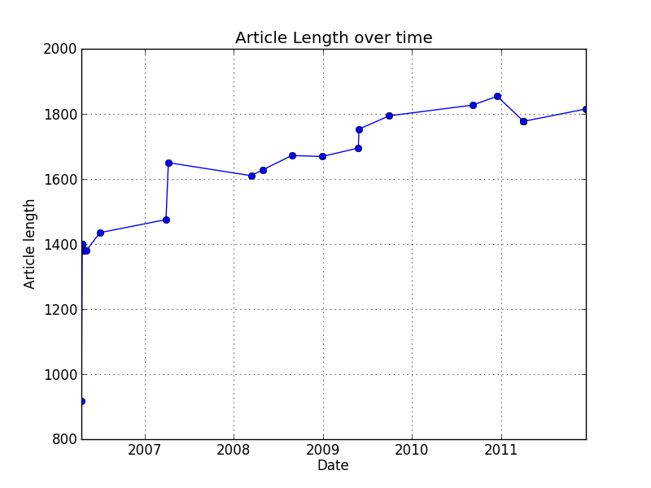

Below is a short introduction to pywikidump. For a brief overview of what can be done with the library, see Overview.
Prior to trying this tutorial, make sure you have pywikidump and dependencies installed according to the Installation instructions.
PyWikiDump interfaces with Wikipedia full history bzip2 data dumps. These can be obtained at Wikimedia with the filenames enwiki-latest-pages-meta-history….bz2. For this tutorial, you can use a small sample found in test/tiny_wikipedia_export.bz2.
To set-up for the examples below, first we’ll load memcached. In a separate console window, type memcached in your terminal to load the memcached daemon on the default port.
Wikipedia files are represented with pywikidump.WikiDumpFile, instantiated with the path to the file and a memcached client from pylibmc.
from pywikidump import WikiDumpFile
import pylibmc
# Connect to memcached
mc = pylibmc.Client(["127.0.0.1"], binary=True)
path = 'test/tiny_wikipedia_export.bz2'
wikifile = WikiDumpFile(path, memcached=mc)
Pages are read consecutively in the bz2 stream. WikiDumpFile.next_page() reads the WikiDumpFile until a page ends. By default, only pages from the main namespace (i.e. the articles) are returned, and redirects are skipped.
# Get a Page
page = wikifile.next_page()
next_page() returns a pywikidump.WikiDumpPage instance of the next page in the file:
>>> page.name
Kozhukhovskaya
>>> page.id
4758087
>>> page.text()
<title>Kozhukhovskaya</title>\n<ns>0</ns>\n<id>4758087</id>...
The parent file is also accessible through parent:
>>> page.parent.name
tiny_wikipedia_export.bz2
Note that reading a page moves the pointer through the WikiDumpFile, saving the new byte location in WikiDumpFile.loc.:
>>> print "File location is {0}".format(wikifile.loc)
File location is 58908
>>> for i in range(0, 7):
... page = wikifile.next_page()
>>> print "New file location is {0}".format(wikifile.loc)
New file location is 2262794
One thing to note is that WikiDumpPage does not save the text. Instead, it remembers the byte locations of the page in the export file. Since seeking through such a large file can be costly, memcached saves the article text temporarily. If the memcached entry is no longer available, text is read from the main file with WikiDumpFile.read().
>>> page.start
2235
>>> page.end
58908
One way to think of WikiDumpPage is as the entire history of a Wikipedia article. However, articles are constantly being editing. A snapshot of an article at a particular moment in time is known as ‘’‘revision’‘’. Revisions are represented as WikiDumpRevision and accessed through WikiDumpPage.revisions():
>>> for i, revision in enumerate(page.revisions):
... print "{0}\t{1}\t{2}\t{3}".format(i, revision.id, revision.timestamp,
... revision.name)
0 48559048 2006-04-15 12:24:27 Kozhukhovskaya
1 49064796 2006-04-18 22:00:36 Kozhukhovskaya
2 49064837 2006-04-18 22:00:53 Kozhukhovskaya
3 49064954 2006-04-18 22:01:50 Kozhukhovskaya
…
21 422120151 2011-04-03 10:18:08 Kozhukhovskaya
22 422150476 2011-04-03 14:56:23 Kozhukhovskaya
23 465930271 2011-12-15 02:28:29 Kozhukhovskaya
Through WikiDumpRevision, it is easy to access data such as sentences(), plaintext, and timestamp. Below is an example of how such information could be used with mimal code.
(Code: Time vs Article Length Plot)
Revision sentences are keyed according to an `NGram Fingerprinter<https://github.com/OpenRefine/OpenRefine/wiki/Clustering-In-Depth#n-gram-fingerprint>`_:
>>> revision = page.revisions[0]
>>> revision.keys()
['alanasatayblcoemetgrhehohuinioiskakhkolalilya…scskslsttathtitrubuku\xd0vswmyayuzh, 'adalarataubiblcechcoctdeeaecedeie…meoeperesetf']
{kind=link}